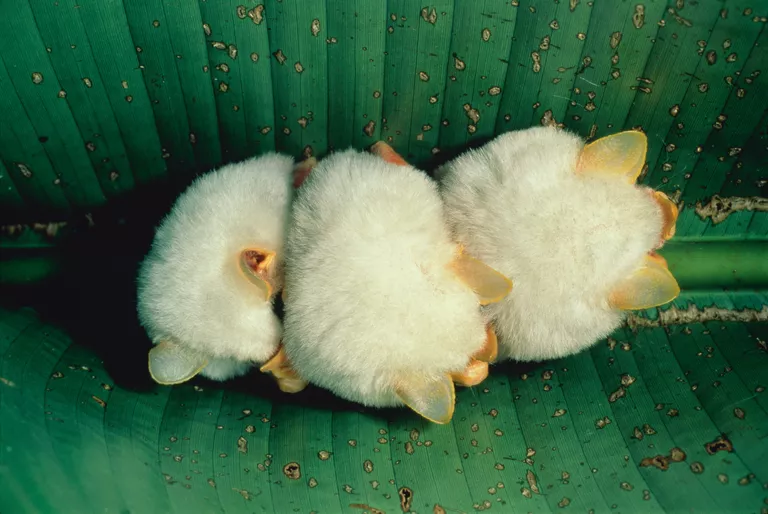

California Bat
Kristen Lalumiere Joshua Tree National Park

Honduran White Bat
Honduran White Bat
Peter's Dwarf Epauletted Fruit Bat
Peter's Dwarf Epauletted Fruit Bat
Flying Brown Long Eared Bat
Flying Brown Long Eared Bat
Greater False Vampire Bat
Aditya Joshi Greater False Vampire Bat Photo
Greater Horseshoe Bat
Greater Horseshoe Bat